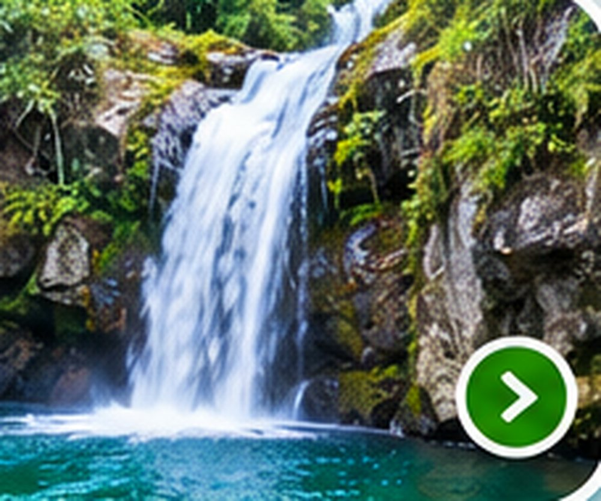

Cascadas del Topacio
Confirma altura, acceso y condiciones de visita.
Descubre cascadas, pozos, miradores y paisajes especiales de Pance.
← Volver al inicioInformación para conocer el territorio con respeto y apoyar a sus comunidades.

Confirma altura, acceso y condiciones de visita.
Paisaje de alta montaña; acceso sujeto a permisos.
Confirma ubicación y acceso permitido.
Visita solo si está habilitado y es seguro.
Punto panorámico por documentar.
Caminatas interpretativas de bajo impacto.
Respeta señalización y restricciones.
Observa sin perturbar la fauna.
Paisaje de alta humedad y vegetación.
Recorridos para registrar flora y paisaje.
Sitios por validar con actores locales.
Vistas del territorio y actividades productivas.
Disfruta el paisaje y cuida las riberas.
Espacios tranquilos y frágiles.
Recorridos con operadores responsables.